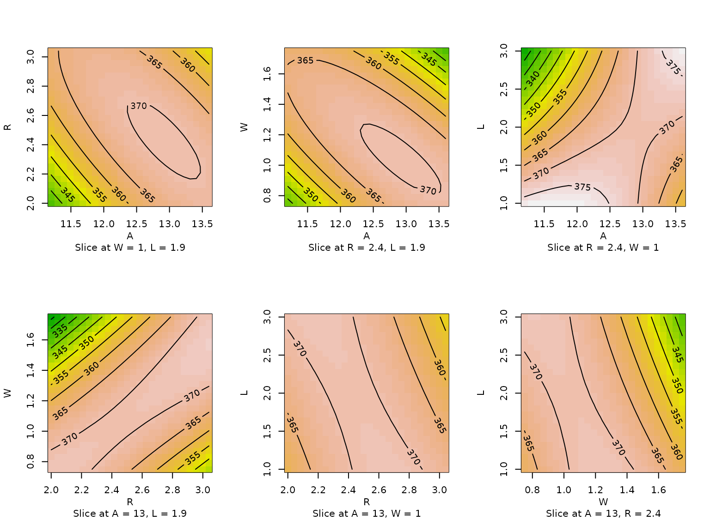

Response-Surface Methods in R, Using rsm
rsm package, Version 2.10.5
Source:vignettes/article-JSS.rmd
article-JSS.rmdAbstract
This introduction to the R package rsm is a modified version of Lenth (2009), published in the Journal of Statistical Software. The package rsm was designed to provide R support for standard response-surface methods. Functions are provided to generate central-composite and Box-Behnken designs. For analysis of the resulting data, the package provides for estimating the response surface, testing its lack of fit, displaying an ensemble of contour plots of the fitted surface, and doing follow-up analyses such as steepest ascent, canonical analysis, and ridge analysis. It also implements a coded-data structure to aid in this essential aspect of the methodology. The functions are designed in hopes of providing an intuitive and effective user interface. Potential exists for expanding the package in a variety of ways.
Introduction
Response-surface methodology comprises a body of methods for exploring for optimum operating conditions through experimental methods. Typically, this involves doing several experiments, using the results of one experiment to provide direction for what to do next. This next action could be to focus the experiment around a different set of conditions, or to collect more data in the current experimental region in order to fit a higher-order model or confirm what we seem to have found.
Different levels or values of the operating conditions comprise the factors in each experiment. Some may be categorical (e.g., the supplier of raw material) and others may be quantitative (feed rates, temperatures, and such). In practice, categorical variables must be handled separately by comparing our best operating conditions with respect to the quantitative variables across different combinations of the categorical ones. The fundamental methods for quantitative variables involve fitting first-order (linear) or second-order (quadratic) functions of the predictors to one or more response variables, and then examining the characteristics of the fitted surface to decide what action is appropriate.
Given that, it may seem like response-surface analysis is simply a regression problem. However, there are several intricacies in this analysis and in how it is commonly used that are enough different from routine regression problems that some special help is warranted. These intricacies include the common use (and importance) of coded predictor variables; the assessment of the fit; the different follow-up analyses that are used depending on what type of model is fitted, as well as the outcome of the analysis; and the importance of visualizing the response surface. Response-surface methods also involve some unique experimental-design issues, due to the emphasis on iterative experimentation and the need for relatively sparse designs that can be built-up piece-by-piece according to the evolving needs of the experimenter.
The rsm package for R (R Development Core Team 2009) provides several functions to facilitate classical response-surface methods, as described in texts such as Box and Draper (1987), Khuri and Cornell (1996, Chapters 1U5), Wu and Hamada (2000, Chapter 9), Myers, Montgomery, and Anderson-Cook (2009), Box, Hunter, and Hunter (2005, Chapters 11U12), and Ryan (2007, Chapter 10). In its current form, rsm covers only the most standard first-and second order designs and methods for one response variable; but it covers those reasonably well, and it could be expanded in the future. Multiple-response optimization is not covered in this package, but the desirability package (Kuhn 2009) may be used in conjunction with predictions obtained using the rsm package. The rsm package is available from the Comprehensive R Archive Network at https://CRAN.R-project.org/package=rsm.
Here is a general overview of rsm. First, it
provides functions and data types that provide for the coding and
decoding of factor levels, since appropriate coding is an important
element of response-surface analysis. These are discussed in the [coding
section]{#coding). Second, it provides functions for generating standard
designs (currently, central-composite and Box-Behnken), and building
blocks thereof, and examining their variance function; see the designs section. Third the fitting section extends R’s
lm function to simplify the specification of standard
response-surface models, and provide appropriate summaries. Fourth, the
contour section provides a means of visualizing a
fitted response surface (or in fact any lm object). Finally
the steepest ascent section provides guidance
for further experimentation, e.g., along the path of steepest ascent.
Most rsm functions take advantage of
R’s formula capabilities to provide intuitive and
transparent ways of obtaining the needed results.
To provide some context, there is good commercial software available
to help with designing and analyzing response-surface experiments. The
most popular include Design-Expert (StatEase, Inc. 2009), JMP (SAS
Institute, Inc. 2009), and Statgraphics (StatPoint Technologies,
Inc. 2009). These all provide for generating Box-Behnken and
central-composite designs, fitting first- and second-order response
surfaces, and visualizing them. These programs generally exceed
rsm’s capabilities (for example, more types of designs,
provisions for mixture experiments, etc.); but rsm
makes the most important methods available in R. To my
knowledge, the functionality of rsm’s
ccd.pick function is not provided in other software, and
rsm may exceed the capabilities of these programs in
the generality of central-composite designs that it can create.
The goal of this vignette is to present an overview of rsm and how its functions may be used to design and analyze response-surface experiments. While most important functions in the package are illustrated, we do not provide comprehensive documentation here; instead, the reader is referred to the manual and online documentation provided with the package. The “Response-Surface Illustration” vignette details a building-blockock approach to generating designs and some other newer features in rsm.
Coding of data
An important aspect of response-surface analysis is using an appropriate coding transformation of the data. The way the data are coded affects the results of canonical analysis (see the sections on fitting and steepest-ascent analysis); for example, unless the scaling factors are all equal, the path of steepest ascent obtained by fitting a model to the raw predictor values will differ from the path obtained in the coded units, decoded to the original scale. Using a coding method that makes all coded variables in the experiment vary over the same range is a way of giving each predictor an equal share in potentially determining the steepest-ascent path. Thus, coding is an important step in response-surface analysis.
Accordingly, the rsm package provides for a
coded.data class of objects, an extension of
data.frame. The functions coded.data,
as.coded.data, decode.data,
recode.data, code2val, and
val2code create or decode such objects. If a
coded.data object is used in place of an ordinary
data.frame in the call to other rsm
functions such as rsm or steepest, then
appropriate additional output is provided that translates the results to
the original units. The print method for a
coded.data object displays the coding formulas and the data
in either coded or decoded form.
As an example, consider the provided dataset ChemReact,
which comes from Table 7.6 of Myers et al. (2009).
library(`rsm`)
ChemReact## Time Temp Block Yield
## 1 80.00 170.00 B1 80.5
## 2 80.00 180.00 B1 81.5
## 3 90.00 170.00 B1 82.0
## 4 90.00 180.00 B1 83.5
## 5 85.00 175.00 B1 83.9
## 6 85.00 175.00 B1 84.3
## 7 85.00 175.00 B1 84.0
## 8 85.00 175.00 B2 79.7
## 9 85.00 175.00 B2 79.8
## 10 85.00 175.00 B2 79.5
## 11 92.07 175.00 B2 78.4
## 12 77.93 175.00 B2 75.6
## 13 85.00 182.07 B2 78.5
## 14 85.00 167.93 B2 77.0In this experiment, the data in block B1 were collected
first and analyzed, after which block B2 was added and a
new analysis was done. The provided datasets ChemReact1 and
ChemReact2 provide these separate blocks. The first block,
ChemReact1, uses factor settings of \(\text{Time}=85\pm5\) and \(\text{Temp}=175\pm5\), with three center
points. Thus, the coded variables are \(x_1 =
(\text{Time}-85)/5\) and \(x_1 =
(\text{Temp}-175)/5\). To create a coded dataset with the
appropriate codings, provide this information via formulas:
CR1 <- coded.data(ChemReact1, x1 ~ (Time - 85)/5, x2 ~ (Temp - 175)/5)
CR1## Time Temp Yield
## 1 80 170 80.5
## 2 80 180 81.5
## 3 90 170 82.0
## 4 90 180 83.5
## 5 85 175 83.9
## 6 85 175 84.3
## 7 85 175 84.0
##
## Data are stored in coded form using these coding formulas ...
## x1 ~ (Time - 85)/5
## x2 ~ (Temp - 175)/5This listing looks much like the original data, but internally, the
data are saved in coded form, as can be seen by coercing it to a
data.frame:
as.data.frame(CR1)## x1 x2 Yield
## 1 -1 -1 80.5
## 2 -1 1 81.5
## 3 1 -1 82.0
## 4 1 1 83.5
## 5 0 0 83.9
## 6 0 0 84.3
## 7 0 0 84.0Any way of writing a linear transformation is acceptable; for
example, we could have written x1 ~ 0.2 * Time - 17.
Observe that coded.data actually transforms the predictor
values and replaces those variables with their coded versions. To create
a coded.data object from data that are already coded, use
as.coded.data.
The function decode.data decodes a
coded.data object. We may also easily encode or decode
matrices or data frames of arbitrary values; for example,
code2val(data.frame(x1 = c(0.25, 0.5), x2 = c(-1.5, -0.5)), codings(CR1))## Time Temp
## 1 86.25 167.5
## 2 87.50 172.5Generating a design
The functions ccd and bbd are available to
generate standard response-surface designs. For example, here we
generate a 3-factor Box-Behnken design (Box and Behnken, 1960) with two
center points:
## run.order std.order Force Rate Polish
## 1 1 8 23 50 5
## 2 2 14 20 50 4
## 3 3 11 20 40 5
## 4 4 6 23 50 3
## 5 5 4 23 60 4
## 6 6 5 17 50 3
## 7 7 2 23 40 4
## 8 8 10 20 60 3
## 9 9 12 20 60 5
## 10 10 7 17 50 5
## 11 11 9 20 40 3
## 12 12 3 17 60 4
## 13 13 1 17 40 4
## 14 14 13 20 50 4
##
## Data are stored in coded form using these coding formulas ...
## x1 ~ (Force - 20)/3
## x2 ~ (Rate - 50)/10
## x3 ~ Polish - 4By default, the variable names are x1, x2,
… and the experiment is randomized. If there are \(4\) or \(5\) factors, the design is blocked by
default (this is not possible for other numbers of factors), and the
blocks are randomized separately.
One of the most popular response-surface designs is the
central-composite design (CCD), due to Box and Wilson (1951). A simple
example is the chemical-reaction experiment presented in the preceding
section. These designs allow for sequential augmentation, so that we may
first experiment with just one block suitable for fitting a first-order
model, and then add more block(s) if a second-order fit is needed.
The blocks in a CCD are of two types—one type, called a “cube” block,
contains design points from a two-level factorial or fractional
factorial design, plus center points; the other type, called a “star”
block, contains axis points plus center points.
In the following discussion, the term “design points” refers to the non-center points in a block. The levels of the factors are coded, so that the cube blocks contain design points with coordinate values all equal to \(\pm1\), and center points at \((0,0,\ldots,0)\). The design points in the star blocks are at positions of \(\pm\alpha\) along each coordinate axis. The value of \(\alpha\), and choices of replications of design points and center points, are often selected based on considerations of rotatability (i.e., the variance of the prediction depends only on the distance from the center) and orthogonality of blocks (so that the coefficients of the fitted response-surface equation are not correlated with block effects).
The table below displays the parameters of a CCD, along with the
names used by the function ccd.pick to be described
shortly. Suppose that there are \(k\)
variables to be varied. For the cube blocks, we start with a given \(2^{k-p}\) fractional factorial design (or
full factorial, when \(p=0\)). We may
either use this design as-is to define the design points in the cube
block(s). Alternatively, we may confound one or more effects with blocks
to split this design into blks.c smaller cube blocks, in
which case each cube block contains \(2^{k-p}/\mathtt{blks.c}\) distinct design
points. The star blocks always contain all \(2k\) distinct design points—two on each
axis.
| Parameter(s) | Cube block(s) | Star block(s) |
|---|---|---|
| Design points | \((\pm1,\pm1,...,\pm1)\) | \((\pm\alpha,0,0,...,0),...,(0,0,...,\pm\alpha)\) |
| Center points | \((0,0,\ldots,0)\) | \((0,0,\ldots,0)\) |
| # Distinct design points | \(2^{k-p}\) (altogether) | \(2k\) |
| # Fractions of \(2^{k-p}\) | blks.c |
– |
| Reps of each design point, within each block | wbr.c |
wbr.s |
| # Design pts each block |
n.c \(=
\mathtt{\frac{wbr.c}{blks.c}}\cdot2^{k-p}\)
|
n.s \(=\mathtt{wbr.s}\cdot(2k)\)
|
| # Center points | n0.c |
n0.s |
| # Points in each block | n.c + n0.c |
n.s + n0.s |
| Reps of each block | bbr.c |
bbr.s |
Total observations (N) |
blks.c * bbr.c * (n.c + n0.c) |
+ bbr.s * (n.s + n0.s) |
Once the designs are decided, we may, if we like, replicate them
within blocks. We may also replicate the center points. The names
wbr.c and wbr.s (for “within-block reps”)
refer to the number of replicates of each design point within each cube
block or star block, respectively.
Thus, each cube block has a total of \(\mathtt{n.c} =
\mathtt{wbr.c}\cdot2^{k-p}/\mathtt{blks.c}\) design points, and
each star block contains \(\mathtt{wbr.s}\cdot2k\) design points. We
may also replicate the center points—n0.c times in each
cube block, n0.s times within each star block.
Finally, we may replicate the blocks themselves; the numbers of such
between-block replications are denoted bbr.c and
bbr.s for cube blocks and star blocks, respectively. It is
important to understand that each block is separately randomized, in
effect a mini-experiment within the larger experiment. Having
between-block replications means repeating these mini-experiments. We
run an entire block before running another block.
The function ccd.pick is designed to help identify good
CCDs. It simply creates a grid of all combinations of design choices,
computes the \(\alpha\) values required
for orthogonality and rotatability, sorts them by a specified criterion
(by default, a measure of the discrepancy between these two \(\alpha\)s), and presents the best few.
For example, suppose that we want to experiment with \(k=5\) factors, and we are willing to
consider CCDs with \(\mathtt{blks.c}=1\), \(2\), or \(4\) cube blocks of sizes \(\mathtt{n.c}=8\) or \(16\) each.
With this many factors, the number of different star points (\(2k=10\)) is relatively small compared with
the size of some cube blocks (\(16\)),
so it seems reasonable to consider either one or two replications (\(\mathtt{wbr.s}\in\{1,2\}\)) of each point
within each star block.
Finally, suppose that we want the total size of the experiment to be no
more than \(N=65\) runs (see
restrict in the call below). Here are the ten best choices
based on these criteria:
## n.c n0.c blks.c n.s n0.s bbr.c wbr.s bbr.s N alpha.rot alpha.orth
## 1 16 6 1 10 1 1 1 1 33 2.000000 2.000000
## 2 16 8 1 10 2 1 1 1 36 2.000000 2.000000
## 3 16 10 1 10 3 1 1 1 39 2.000000 2.000000
## 4 16 5 2 20 1 1 2 1 63 2.000000 2.000000
## 5 16 8 2 10 7 1 1 1 65 2.378414 2.380476
## 6 8 4 4 10 7 1 1 1 65 2.378414 2.380476
## 7 16 1 2 10 2 1 1 1 46 2.378414 2.376354
## 8 16 5 2 10 5 1 1 1 57 2.378414 2.390457
## 9 16 4 2 10 4 1 1 1 54 2.378414 2.366432
## 10 8 2 4 10 4 1 1 1 54 2.378414 2.366432The first design listed is also the smallest; it consists of one cube
block of \(16\) runs, plus \(6\) center points; and one star block with
the points replicated once and one center point; thus, the total number
of runs is \(N=(16+6)+(10+1) = 33\). If
we choose \(\alpha=2\), this design is
both orthogonal and rotatable as seen by noting that
alpha.rot and alpha.orth are both equal to
\(2\). The \(16\) design points in the cube block may be
generated by a \(2^{5-1}\) fractional
factorial design.
While this is a small design, we have only one center point in the star block, not providing a way to test lack of fit in the star portion. The second and third designs remedy this slightly, but all these designs are fairly lopsided in that the cube block is much larger than the star block. The next few designs require considerably more runs. Design number 4 is nicely balanced in that it consists of three blocks of \(21\) runs each, and it is both rotatable and orthogonal. However, we still have no lack-of-fit test in the star blocks. Designs 5 and 6 differ only in whether they use two \(2^{5-1}\) cubes or four \(2^{5-2}\) cubes, but they provide several center points for a lack-of-fit test. If we position the axis points at \(\alpha=2.38\), the design is almost orthogonal and almost rotatable. The remaining designs also come close to meeting both criteria, but are also somewhat smaller, so that Designs 9 and 10 are essentially down-sized versions of Designs 5 and 6.
The choice of which design is best depends on the tradeoff between economy and ability to assess the fitted surface. Design 1 is the only one of these that is included in Table 7.6 of Myers et al. (2009). It is good to be able to look at a broader range of choices.
Once we decide the design, the ccd function is used to
generate it. (Alternatively, starting with rsm version
2.0, the cube, star, foldover,
and dupe functions are available for generating and
randomizing a CCD in separate blocks, and then they may be combined
using djoin.) We first illustrate the generation of Design
1 above. This design requires a \(2^{5-1}\) fraction for the cube block.
Typically, this is done by confounding the five-way interaction with the
mean; or equivalently, create a four-factor design, and generate the
levels of the fifth as the four-way interaction of the others. That is
the approach implemented by ccd. Suppose that we denote the
design factors by \(A,B,C,D,E\); let’s
opt to use \(E=-ABCD\) as the
generator. The following call generates the design (results not
shown):
The value of \(\alpha\) was not
specified, and by default it uses the \(\alpha\) for orthogonality. The first
argument could have been just 4, but then the generator
would have had to have been given in terms of the default variable names
x1, x2, …. The optional left-hand side in the
formula creates place-holders for response variable(s), to be filled-in
with data later. As in bbd, we could have added coding
formulas to create a coded.data object.
Next, we illustrate the generation of Design 10. This design has four
\(2^{5-2}\) cube blocks with \(2\) center points each, and one
unreplicated star block with \(4\)
center points. The non-center points in the cube blocks comprise \(4\times8=32\) runs, so we most likely want
to create them by dividing the full \(2^5\) factorial into four fractional
blocks. We can for example opt to generate the blocks via the factors
\(b_1=ABC\) and \(b_2=CDE\), so that the blocks are
determined by the four combinations of \(b_1\) and \(b_2\). Then the block effects will be
confounded with the effects \(ABC\),
\(CDE\), and also the \(b_1b_2\) interaction \(ABC^2DE=ABDE\). It is important in
response-surface work to avoid confounding second-order interactions,
and this scheme is thus acceptable. Unlike Design 1, this design
includes all \(2^5\) factor
combinations, so we do not use the generators argument;
instead, we use blocks to do the fractionation:
Each block is randomized separately, but the order of the blocks is
not randomized. In practice, we may opt to run the blocks in a different
sequence.
With this design, just one of the cube blocks is sufficient to estimate
a first-order response surface.
It is also important to examine a design’s capabilities. First of
all, is it adequate to fit the needed first- or second-order model, and
how effective is it in predicting the response surface? The
varfcn function (a new addition starting
rsm version 2.0) is helpful in this regard. It
calculates a scaled version of the varaince of the fitted values over a
specified set of design points. By default, it computes this along paths
through \((1,0,\ldots,0),(1,1,\ldots,0),\ldots,(1,1,\ldots,1)\),
or on a grid with the first two variables. The right-hand side of the
intended model must be provided.
We illustrate this for Design 10:
It shows that the design is nearly rotatable (it would be exactly so
if we had chosen alpha = "rotatable" in the call to
ccd). It can also be verified that any two of the cube
blocks plus the axis block is sufficient to estimate a second-order
response surface. Just one cube block plus the axis points, however, is
not sufficient.
It is possible to imagine a CCD that consists of a fractional
factorial divided into blocks. For such a design, both
generators and blocks would be needed. For
smaller numbers of factors, most CCDs require no fractionation of either
type, and obviously these are simple to generate.
Starting in version 1.40 of rsm, an
inscribed argument is available in ccd. This
scales the entire design so that it fits within a unit cube—useful for
situations when there are constraints on the region of operability.
## run.order std.order x1.as.is x2.as.is Block
## 1 1 1 -0.7071068 -0.7071068 1
## 2 2 2 0.7071068 -0.7071068 1
## 3 3 3 -0.7071068 0.7071068 1
## 4 4 4 0.7071068 0.7071068 1
## 5 5 5 0.0000000 0.0000000 1
## 6 1 1 -1.0000000 0.0000000 2
## 7 2 2 1.0000000 0.0000000 2
## 8 3 3 0.0000000 -1.0000000 2
## 9 4 4 0.0000000 1.0000000 2
## 10 5 5 0.0000000 0.0000000 2
##
## Data are stored in coded form using these coding formulas ...
## x1 ~ x1.as.is
## x2 ~ x2.as.isNote in this example that it is now the axis points that are at \(\pm1\), while the cube points are at \(\pm\sqrt{1/2}\). (Incidentally, this example also illustrates the default codings used when no coding formulas are specified.)
There are several other types of designs that are useful for response surfaces, as mentioned in several of the books referenced in this article. Provisions for generating those designs are an area of future development in the rsm package.
Fitting a response-surface model
A response surface is fitted using the rsm function.
This is an extension of lm, and works almost exactly like
it; however, the model formula for rsm must make use of the
special functions FO, TWI, PQ, or
SO (for “first-order,”, “two-way interaction,” “pure
quadratic,” and “second-order,” respectively), because the presence of
these specifies the response-surface portion of the model. Other terms
that don’t involve these functions may be included in the model; often,
these terms would include blocking factors and other categorical
predictors.
To illustrate this, let us revisit the ChemReact data
introduced in the coding section. We have one
response variable, Yield, and two coded predictors
x1 and x2 as well as a blocking factor
Block. Supposing that the experiment was done in two
stages, we first act as though the data in the second block have not yet
been collected; and fit a first-order response-surface model to the data
in the first block:
##
## Call:
## rsm(formula = Yield ~ FO(x1, x2), data = CR1)
##
## Estimate Std. Error t value Pr(>|t|)
## (Intercept) 82.81429 0.54719 151.3456 1.143e-08 ***
## x1 0.87500 0.72386 1.2088 0.2933
## x2 0.62500 0.72386 0.8634 0.4366
## ---
## Signif. codes: 0 '***' 0.001 '**' 0.01 '*' 0.05 '.' 0.1 ' ' 1
##
## Multiple R-squared: 0.3555, Adjusted R-squared: 0.0333
## F-statistic: 1.103 on 2 and 4 DF, p-value: 0.4153
##
## Analysis of Variance Table
##
## Response: Yield
## Df Sum Sq Mean Sq F value Pr(>F)
## FO(x1, x2) 2 4.6250 2.3125 1.1033 0.41534
## Residuals 4 8.3836 2.0959
## Lack of fit 2 8.2969 4.1485 95.7335 0.01034
## Pure error 2 0.0867 0.0433
##
## Direction of steepest ascent (at radius 1):
## x1 x2
## 0.8137335 0.5812382
##
## Corresponding increment in original units:
## Time Temp
## 4.068667 2.906191What we see in the summary is the usual summary for a lm
object (with a subtle difference), followed by some additional
information particular to response surfaces. The subtle difference is
that the labeling of the regression coefficients is simplified (we don’t
see “FO” in there). The analysis-of-variance table shown includes a
breakdown of lack of fit and pure error, and we are also given
information about the direction of steepest ascent. Since the dataset is
a coded.data object, the steepest-ascent information is
also presented in original units. (While rsm does not
require a coded.data dataset, the use of one is highly
recommended.)
In this particular example, the steepest-ascent information is of little use, because there is significant lack of fit for this model (\(p \approx 0.01\)). It suggests that we should try a higher-order model. For example, we could add two-way interactions:
The results are not shown, but one finds there is still a small \(p\) value for lack-of-fit.
To go further, we need more data. Thus, let us pretend that we now collect the data in the second block. Then here are the data from the combined blocks:
( CR2 <- djoin(CR1, ChemReact2) )## Time Temp Yield Block
## 1 80.00 170.00 80.5 1
## 2 80.00 180.00 81.5 1
## 3 90.00 170.00 82.0 1
## 4 90.00 180.00 83.5 1
## 5 85.00 175.00 83.9 1
## 6 85.00 175.00 84.3 1
## 7 85.00 175.00 84.0 1
## 8 85.00 175.00 79.7 2
## 9 85.00 175.00 79.8 2
## 10 85.00 175.00 79.5 2
## 11 92.07 175.00 78.4 2
## 12 77.93 175.00 75.6 2
## 13 85.00 182.07 78.5 2
## 14 85.00 167.93 77.0 2
##
## Data are stored in coded form using these coding formulas ...
## x1 ~ (Time - 85)/5
## x2 ~ (Temp - 175)/5Notice that djoin figures out the fact that
ChemReact2 is not coded but it has the appropriate uncoded
variables Time and Temp; so it codes those
variables appropriately. Also, the Block factor is added
automatically.
We are now in the position of fitting a full second-order model to
the combined data. This can be done by adding PQ(x1, x2) to
the above model with interaction, but the easier way is to use
SO, which is shorthand for a model with FO,
TWI, and PQ terms. Also, we now need to
account for the block effect since the data are collected in separate
experiments:
##
## Call:
## rsm(formula = Yield ~ Block + SO(x1, x2), data = CR2)
##
## Estimate Std. Error t value Pr(>|t|)
## (Intercept) 84.095427 0.079631 1056.067 < 2.2e-16 ***
## Block2 -4.457530 0.087226 -51.103 2.877e-10 ***
## x1 0.932541 0.057699 16.162 8.444e-07 ***
## x2 0.577712 0.057699 10.012 2.122e-05 ***
## x1:x2 0.125000 0.081592 1.532 0.1694
## x1^2 -1.308555 0.060064 -21.786 1.083e-07 ***
## x2^2 -0.933442 0.060064 -15.541 1.104e-06 ***
## ---
## Signif. codes: 0 '***' 0.001 '**' 0.01 '*' 0.05 '.' 0.1 ' ' 1
##
## Multiple R-squared: 0.9981, Adjusted R-squared: 0.9964
## F-statistic: 607.2 on 6 and 7 DF, p-value: 3.811e-09
##
## Analysis of Variance Table
##
## Response: Yield
## Df Sum Sq Mean Sq F value Pr(>F)
## Block 1 69.531 69.531 2611.0950 2.879e-10
## FO(x1, x2) 2 9.626 4.813 180.7341 9.450e-07
## TWI(x1, x2) 1 0.063 0.063 2.3470 0.1694
## PQ(x1, x2) 2 17.791 8.896 334.0539 1.135e-07
## Residuals 7 0.186 0.027
## Lack of fit 3 0.053 0.018 0.5307 0.6851
## Pure error 4 0.133 0.033
##
## Stationary point of response surface:
## x1 x2
## 0.3722954 0.3343802
##
## Stationary point in original units:
## Time Temp
## 86.86148 176.67190
##
## Eigenanalysis:
## eigen() decomposition
## $values
## [1] -0.9233027 -1.3186949
##
## $vectors
## [,1] [,2]
## x1 -0.1601375 -0.9870947
## x2 -0.9870947 0.1601375The lack of fit is now non-significant (\(p \approx 0.69\)). The summary for a second-order model provides results of a canonical analysis of the surface rather than for steepest ascent. The analysis indicates that the stationary point of the fitted surface is at \((0.37, 0.33)\) in coded units—well within the experimental region; and that both eigenvalues are negative, indicating that the stationary point is a maximum. This is the kind of situation we dream for in response-surface experimentation—clear evidence of a nearby set of optimal conditions. We should probably collect some confirmatory data near this estimated optimum at \(\text{Time}\approx87\), \(\text{Temp}\approx 177\), to make sure.
Another example that comes out a different way is a paper-helicopter
experiment (Box et al. 2005, Table 12.5). This is another
central-composite experiment, in four variables and two blocks. The data
are provided in the rsm dataset heli;
these data are already coded. The original variables are wing area
A, wing shape R, body width W,
and body length L. The goal is to make a paper helicopter
that flies for as long as possible. Each observation in the dataset
represents the results of ten replicated flights at each experimental
condition. Here we study the average flight time, variable name
ave, using a second-order surface.
##
## Call:
## rsm(formula = ave ~ block + SO(x1, x2, x3, x4), data = heli)
##
## Estimate Std. Error t value Pr(>|t|)
## (Intercept) 372.800000 1.506375 247.4815 < 2.2e-16 ***
## block2 -2.950000 1.207787 -2.4425 0.0284522 *
## x1 -0.083333 0.636560 -0.1309 0.8977075
## x2 5.083333 0.636560 7.9856 1.398e-06 ***
## x3 0.250000 0.636560 0.3927 0.7004292
## x4 -6.083333 0.636560 -9.5566 1.633e-07 ***
## x1:x2 -2.875000 0.779623 -3.6877 0.0024360 **
## x1:x3 -3.750000 0.779623 -4.8100 0.0002773 ***
## x1:x4 4.375000 0.779623 5.6117 6.412e-05 ***
## x2:x3 4.625000 0.779623 5.9324 3.657e-05 ***
## x2:x4 -1.500000 0.779623 -1.9240 0.0749257 .
## x3:x4 -2.125000 0.779623 -2.7257 0.0164099 *
## x1^2 -2.037500 0.603894 -3.3739 0.0045424 **
## x2^2 -1.662500 0.603894 -2.7530 0.0155541 *
## x3^2 -2.537500 0.603894 -4.2019 0.0008873 ***
## x4^2 -0.162500 0.603894 -0.2691 0.7917877
## ---
## Signif. codes: 0 '***' 0.001 '**' 0.01 '*' 0.05 '.' 0.1 ' ' 1
##
## Multiple R-squared: 0.9555, Adjusted R-squared: 0.9078
## F-statistic: 20.04 on 15 and 14 DF, p-value: 6.54e-07
##
## Analysis of Variance Table
##
## Response: ave
## Df Sum Sq Mean Sq F value Pr(>F)
## block 1 16.81 16.81 1.7281 0.209786
## FO(x1, x2, x3, x4) 4 1510.00 377.50 38.8175 1.965e-07
## TWI(x1, x2, x3, x4) 6 1114.00 185.67 19.0917 5.355e-06
## PQ(x1, x2, x3, x4) 4 282.54 70.64 7.2634 0.002201
## Residuals 14 136.15 9.72
## Lack of fit 10 125.40 12.54 4.6660 0.075500
## Pure error 4 10.75 2.69
##
## Stationary point of response surface:
## x1 x2 x3 x4
## 0.8607107 -0.3307115 -0.8394866 -0.1161465
##
## Stationary point in original units:
## A R W L
## 12.916426 2.434015 1.040128 1.941927
##
## Eigenanalysis:
## eigen() decomposition
## $values
## [1] 3.258222 -1.198324 -3.807935 -4.651963
##
## $vectors
## [,1] [,2] [,3] [,4]
## x1 0.5177048 0.04099358 0.7608371 -0.38913772
## x2 -0.4504231 0.58176202 0.5056034 0.45059647
## x3 -0.4517232 0.37582195 -0.1219894 -0.79988915
## x4 0.5701289 0.72015994 -0.3880860 0.07557783From the analysis of variance, it is clear that the second-order
(TWI and PQ) terms contribute significantly to
the model, so the canonical analysis is relevant. Again, the stationary
point is fairly near the experimental region, but the eigenvalues are of
mixed sign, indicating that it is a saddle point (neither a maximum nor
a minimum). We will do further analysis of these results in the
subsequent sections.
Displaying a response surface
While the canonical analysis gives us a handle on the behavior of a
second-order response surface, an effective graph is a lot easier to
present and explain. To that end, rsm includes a function
for making contour plots of a fitted response surface. This function is
not restricted to rsm results, however; it can be used for
plotting any regression surface produced by lm. For more
detailed information, see the associated vignette We provide the
lm or rsm object, a formula for which
predictors to use, and various optional parameters. Consider the
paper-helicopter example in the preceding section; there are four
response-surface predictors, making six pairs of predictors. If we want
to visualize the behavior of the fitted surface around the stationary
point, we can provide that location as the at argument:
par(mfrow = c(2, 3))
contour(heli.rsm, ~ x1 + x2 + x3 + x4, image = TRUE,
at = summary(heli.rsm)$canonical$xs)
The image argument causes each plot to display a color
image overlaid by the contour lines. When multiple plots like this are
produced, the color levels are held consistent across all plots. Note
that the at condition does not set the center of the
coordinate systems (the default variable ranges are derived from the
data); it sets the values at which to hold variables other than those on
one of the coordinate axes, as shown in the subtitles.
Direction for further experimentation
In many first-order cases, as well as second-order cases where we
find a saddle point or the stationary point is distant, the most useful
further action is to decide in which direction to explore further. In
the case of first-order models, one can follow the direction of steepest
ascent. As already seen in , the summary method for
rsm objects provides some information about this path. More
detailed information is available via the steepest
function; for example,
## Path of steepest ascent from ridge analysis:## dist x1 x2 | Time Temp | yhat
## 1 0.0 0.000 0.000 | 85.000 175.000 | 82.814
## 2 0.5 0.407 0.291 | 87.035 176.455 | 83.352
## 3 1.0 0.814 0.581 | 89.070 177.905 | 83.890In general, we can specify any set of distances along the path. The
decoded coordinate values are displayed if the model was fitted to a
coded.data dataset.
At this point it is worth emphasizing that, although the fitted values are also displayed, one must be careful to understand that these are only predictions and that, as the distance increases, they are very poor predictions and should be taken with a grain of salt. What one should do is to conduct actual experimental runs at points along this path, and use the observed response values, not these predictions, for guidance on where to locate the next factorial experiment.
In the second-order case, the steepest function still
works, but it uses the ridge analysis method (Hoerl 1959; Draper 1963),
which is the analog of steepest ascent in the sense that for a specified
distance \(d\), it finds the point at
which the predicted response is a maximum among all predictor
combinations at radius \(d\). This
method makes sense when the stationary point is some distance away; but
when this point is nearby, it makes more sense to start at the saddle
point (rather than the origin) and follow the most steeply rising ridge
in both directions. This path is obtained using the
canonical.path function. In this function, distance is a
signed quantity, according to the direction along the ridge.
In the heli example, we do have a nearby stationary
point. Here are some points within a radius of \(5\) along the canonical path:
canonical.path(heli.rsm, dist = seq(-5, 5, by = 0.5))## dist x1 x2 x3 x4 | A R W L | yhat
## 1 -5.0 -1.728 1.921 1.419 -2.967 | 11.3632 3.01946 1.60475 0.5165 | 453.627
## 2 -4.5 -1.469 1.696 1.193 -2.682 | 11.5186 2.96096 1.54825 0.6590 | 438.150
## 3 -4.0 -1.210 1.471 0.967 -2.397 | 11.6740 2.90246 1.49175 0.8015 | 424.302
## 4 -3.5 -0.951 1.246 0.742 -2.112 | 11.8294 2.84396 1.43550 0.9440 | 412.094
## 5 -3.0 -0.692 1.021 0.516 -1.827 | 11.9848 2.78546 1.37900 1.0865 | 401.504
## 6 -2.5 -0.434 0.795 0.290 -1.541 | 12.1396 2.72670 1.32250 1.2295 | 392.534
## 7 -2.0 -0.175 0.570 0.064 -1.256 | 12.2950 2.66820 1.26600 1.3720 | 385.203
## 8 -1.5 0.084 0.345 -0.162 -0.971 | 12.4504 2.60970 1.20950 1.5145 | 379.502
## 9 -1.0 0.343 0.120 -0.388 -0.686 | 12.6058 2.55120 1.15300 1.6570 | 375.429
## 10 -0.5 0.602 -0.105 -0.614 -0.401 | 12.7612 2.49270 1.09650 1.7995 | 372.986
## 11 0.0 0.861 -0.331 -0.839 -0.116 | 12.9166 2.43394 1.04025 1.9420 | 372.172
## 12 0.5 1.120 -0.556 -1.065 0.169 | 13.0720 2.37544 0.98375 2.0845 | 372.987
## 13 1.0 1.378 -0.781 -1.291 0.454 | 13.2268 2.31694 0.92725 2.2270 | 375.428
## 14 1.5 1.637 -1.006 -1.517 0.739 | 13.3822 2.25844 0.87075 2.3695 | 379.499
## 15 2.0 1.896 -1.232 -1.743 1.024 | 13.5376 2.19968 0.81425 2.5120 | 385.206
## 16 2.5 2.155 -1.457 -1.969 1.309 | 13.6930 2.14118 0.75775 2.6545 | 392.538
## 17 3.0 2.414 -1.682 -2.195 1.594 | 13.8484 2.08268 0.70125 2.7970 | 401.498
## 18 3.5 2.673 -1.907 -2.421 1.879 | 14.0038 2.02418 0.64475 2.9395 | 412.088
## 19 4.0 2.932 -2.132 -2.646 2.164 | 14.1592 1.96568 0.58850 3.0820 | 424.295
## 20 4.5 3.190 -2.358 -2.872 2.449 | 14.3140 1.90692 0.53200 3.2245 | 438.140
## 21 5.0 3.449 -2.583 -3.098 2.734 | 14.4694 1.84842 0.47550 3.3670 | 453.615Box et al. (2005, Table12.7 and Figure12.6) reports some results of experimentation along this path. They found the most promising location for the next experiment was at a distance of about \(3.5\) (\(-3.5\) on their scale as their signs are reversed from ours).
Stationary and rising-ridge situations
Canonical analysis becomes unstable in cases where the matrix \(\mathbf{B}\) of second-order coefficients
is singular or nearly so. As an example, consider the dataset
codata provided with rsm and used as an
example in Box et al. (2005). It comes in coded form, but to
relate things to the actual variables, let’s add the codings:
CO = as.coded.data(codata, x1 ~ (Ethanol - 0.2)/0.1, x2 ~ A.F.ratio - 15)
names(CO)[3] = "CO.conc"
head(CO)## Ethanol A.F.ratio CO.conc
## 1 0.1 14 61.9
## 2 0.1 14 65.6
## 3 0.2 14 80.9
## 4 0.2 14 78.0
## 5 0.3 14 89.7
## 6 0.3 14 93.8
##
## Data are stored in coded form using these coding formulas ...
## x1 ~ (Ethanol - 0.2)/0.1
## x2 ~ A.F.ratio - 15This is a \(3^2\) design in one block. We fit a second-order model and obtain the canonical analysis:
## Near-stationary-ridge situation detected -- stationary point altered
## Change 'threshold' if this is not what you intend## $xs
## x1 x2
## -0.06302658 -0.05997463
##
## $eigen
## eigen() decomposition
## $values
## [1] 0.000000 -8.886833
##
## $vectors
## [,1] [,2]
## x1 0.6893497 -0.7244288
## x2 -0.7244288 -0.6893497Note that, due to an automatic thresholding provision, one of the eigenvalues has been set to zero. This causes the stationary point to be estimated based only on the surviving eigenvector, with the other one assumed to be a stationary ridge. To ignore this thresholding, set the threshold to zero:
canonical(CO.rsm, threshold = 0)## $xs
## x1 x2
## -14.81387 15.44149
##
## $eigen
## eigen() decomposition
## $values
## [1] 0.1868328 -8.8868328
##
## $vectors
## [,1] [,2]
## x1 0.6893497 -0.7244288
## x2 -0.7244288 -0.6893497Now, the stationary point is at about \((-15,15)\) in coded units—very distant from the design center.
The following statements produce an illustrative plot of this situation.
contour(CO.rsm, x2 ~ x1, bounds = list(x1 = c(-16, 2), x2 = c(-2, 16)),
zlim = c(-100, 100), col = "gray", decode = FALSE)
lines(c(-1,1,1,-1,-1), c(-1,-1,1,1,-1), col = "green") # design region
points(x2 ~ x1, data = canonical.path(CO.rsm),
col = "blue", pch = 1 + 6*(dist == 0))
points(x2 ~ x1, data = canonical.path(CO.rsm, threshold = 0),
col = "red", pch = 1 + 6*(dist == 0))
points(x2 ~ x1, data=steepest(CO.rsm),
col = "magenta", pch = 1 + 6*(dist == 0))## Path of steepest ascent from ridge analysis:
## Path of steepest ascent from ridge analysis:It displays the fitted response surface, as well as the results from
canonical.path with and without the threshold (blue and red
points, respectively). The region of the design is shown as a green box.
The stationary point (different symbol) is seen to be a saddle point
near the upper-left corner when not thresholded, and near the design
center whern thresholded. Otherwise, the canonical paths are much the
same but with different origins. Both form a path along the rising ridge
that occurs in the vicinity of the design.
It is important to note that the stationary point obtained by the
default thresholding is not really a stationary point, but rather a
nearby point that represents a center for the most important canonical
directions. In this example, the true stationary point is very distant,
and the thresholded stationary point is the nearest place on a rising
ridge that emanates from the true stationary point. The thresholded
canonical.path results give us a much more usable set of
factor settings to explore than the ones without a threshold.
Technical details
This subsection provides some technical backing for canonical analysis and what we do when a threshold is active, in case you’re interested.
Let \(\mathbf{b}\) and \(\mathbf{B}\) denote the first and second-order coefficients of the fitted second-order surface, so that the fitted value at a coded point \(\mathbf{x}\) is \(\hat{y}(\mathbf{x}) = b_0 + \mathbf{b}'\mathbf{x} + \mathbf{x}'\mathbf{B}\mathbf{x}\). The stationary point \(\mathbf{x}_s\) solves the equation \(2\mathbf{B}\mathbf{x}_s + \mathbf{b} = \mathbf{0}\), i.e., \(\mathbf{x}_s = -\frac12\mathbf{B}^{-1}\mathbf{b}\). The canonical analysis yields the decomposition \[ \mathbf{B} = \mathbf{U}\mathbf{\Lambda}\mathbf{U}' = \lambda_1\mathbf{u}_1\mathbf{u}_1' + \lambda_2\mathbf{u}_2\mathbf{u}_2' + \cdots + \lambda_k\mathbf{u}_k\mathbf{u}_k' \] where there are \(k\) predictors, the \(\mathbf{u}_j\) form orthonormal columns of \(\mathbf{U}\), and the \(\lambda_j\) are the eigenvalues, and \(\mathbf{\Lambda} = \mathrm{diag}(\lambda_1,\lambda_2,\ldots,\lambda_k)\). It also happens to be true that \[ \mathbf{B}^{-1} = \mathbf{U}\mathbf{\Lambda}^{-1}\mathbf{U}' = \textstyle\frac1{\lambda_1}\mathbf{u}_1\mathbf{u}_1' + \frac1{\lambda_2}\mathbf{u}_2\mathbf{u}_2' + \cdots + \frac1{\lambda_k}\mathbf{u}_k\mathbf{u}_k' \] Thus, a really small value of \(\lambda_j\) hardly affects \(\mathbf{B}\), but has a huge influence on \(\mathbf{B}^{-1}\).
Now, for some \(m<k\), let \(\mathbf{\Lambda}_*\) be the \(m\times m\) diagonal matrix with only some subset of \(m\) eigenvalues; and let \(\mathbf{U}_*\) be the \(k \times m\) matrix with the corresponding \(\mathbf{u}_j\). If we excluded the smallest absolute eigenvalues, then \(\mathbf{B}_* = \mathbf{U}_*\mathbf{\Lambda}_*\mathbf{U}'_* \approx \mathbf{B}\). Moreover, by orthogonality, \(\mathbf{U}'\mathbf{B} = \mathbf{\Lambda}\mathbf{U}'\) and \(\mathbf{U}_*'\mathbf{B} = \mathbf{\Lambda}_*\mathbf{U}_*'\). The stationary point satisfies \(2\mathbf{B}\mathbf{x} + \mathbf{b} = \mathbf{0}\) so that \(2\mathbf{U}_*'\mathbf{B}\mathbf{x} + \mathbf{U}_*'\mathbf{b} = \mathbf{0}\). Accordingly, we propose to define a pseudo-stationary point \(\mathbf{x}_*\) such that \(2\mathbf{U}_*'\mathbf{B}\mathbf{x}_* + \mathbf{U}_*'\mathbf{b} = \mathbf{0}\); i.e., \(2\mathbf{\Lambda}_*\mathbf{U}_*'\mathbf{x}_* + \mathbf{U}_*'\mathbf{b} = \mathbf{0}\).
This comprises \(m\) equations in
\(k>m\) unknowns. To make it unique,
we opt to choose the solution that is closest to the origin; that is,
minimize \(\mathbf{x}'\mathbf{x}\)
subject to the constraint that \(2\mathbf{\Lambda}_*\mathbf{U}_*'\mathbf{x} +
\mathbf{U}_*'\mathbf{b} = \mathbf{0}\). Using variational
methods (Lagrange multipliers), we find that the resulting solution is
\(\mathbf{x}_*=
-\frac12\mathbf{U}_*\mathbf{\Lambda}_*^{-1}\mathbf{U}_*'\mathbf{b}\).
In other words, we simply exclude some terms corresponding to small
\(\lambda_i\) in the above expression
for \(\mathbf{B}^{-1}\). This is the
stationary point returned in rsm’s
canonical and related functions when a threshold is used to
exclude some small eigenvalues.
Discussion
The current version of rsm provides only the most standard tools for first- and second-order response-surface design and analysis. The package can be quite useful for those standard situations, and it implements many of the analyses presented in textbooks. However, clearly a great deal of work has been done in response-surface methods that is not represented here. Even a quick glance at a review article such as Myers, Montgomery, Vining, Borror, and Kowalski (2004) – or even an older one such as Hill and Hunter (1989) – reveals that there is a great deal that could be added to future editions of rsm. There are many other useful designs besides central composites and Box-Behnken designs. We can consider higher-order models or the use of predictor transformations. Mixture designs are not yet provided for. There are important relationships between these methods and robust parameter design, and with computer experiments. The list goes on. However, we now at least have a good collection of basic tools for the R platform, and that is a starting point.
References
Box GEP,Behnken DW(1960). “Some New Three Level Designs for the Study of Quantitative Variables.” Technometrics, 2, 455–475.
Box GEP, Draper NR (1987). Empirical Model-Building and Response Surfaces. John Wiley & Sons, New York.
Box GEP, Hunter WG, Hunter JS (2005). Statistics for Experimenters: An Introduction to Design, Data Analysis, and Model Building. 2nd edition. John Wiley & Sons, New York.
Box GEP, Wilson KB (1951). “On the Experimental Attainment of Optimum Conditions.” Journal of the Royal Statistical Society B, 13, 1–45.
Draper NR (1963). “‘Ridge Analysis’ of Response Surfaces.” Technometrics, 5, 469–479.
Hill WJ, Hunter WG (1989). “A Review of Response Surface Methodology: A Literature Review.” Technometrics, 8, 571–590.
Hoerl AE (1959). “Optimum Solution of Many Variables Equations.” Chemical Engineering Progress, 55, 67–78.
Khuri AI, Cornell JA (1996). Responses Surfaces: Design and Analyses. 2nd edition. Marcel Dekker, Monticello, NY.
Kuhn M (2009). desirability: Desirability Function Optimization and Ranking. R package version 1.02, URL https://CRAN.R-project.org/package=desirability
Lenth RV (2009). “Response-Surface Methods in R, Using rsm.” Journal of Statistical Software, 32(7), 1–17. URL https://www.jstatsoft.org/v32/i07/.
Myers RH, Montgomery DC, Anderson-Cook CM (2009). Response Surface Methodology: Product and Process Optimization Using Designed Experiments. 3nd edition. John Wiley & Sons, New York.
Myers RH, Montgomery DC, Vining GG, Borror CM, Kowalski SM (2004). “Response Surface Methodology: A Retrospective and Literature Survey.” Journal of Quality Technology, 36, 53–78.
R Development Core Team (2009). R: A Language and Environment for Statistical Computing. R Foundation for Statistical Computing, Vienna, Austria. ISBN 3-900051-07-0, URL http: //www.R-project.org/.
Ryan TP (2007). Modern Experimental Design. John Wiley & Sons, New York.
SAS Institute, Inc (2009). JMP 8: Statistical Discovery Software. Cary, NC. URL http: //www.jmp.com/.
Stat-Ease, Inc (2009). Design-Expert 7 for Windows: Software for Design of Experiments (DOE). Minneapolis, MN. URL https://www.statease.com/software/design-expert/.
StatPoint Technologies, Inc (2009). Statgraphics Centurion: Data Analysis and Statistical Software. Warrenton, VA. URL https://www.statgraphics.com/.
Wu CFJ, Hamada M (2000). Experiments: Planning, Analysis, and Parameter Design Optimization. John Wiley & Sons, New York.